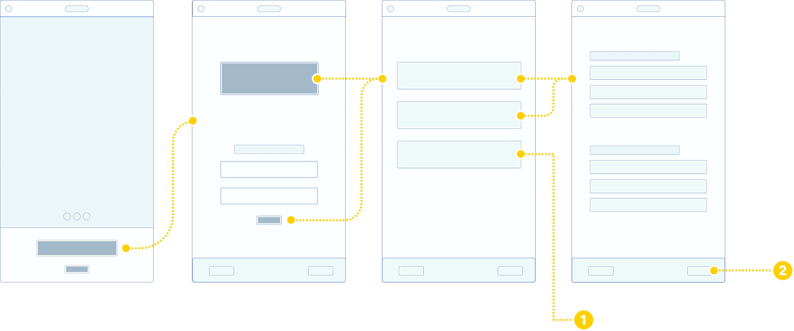

Global warming has made natural disasters more frequent and more severe.
In 2017, I watched helplessly as major hurricanes, wildfires, and other extreme weather events ravaged the United States and virtually every other area of the world. But I also witnessed a new development in the response to these disasters: people are taking to social media more than ever before in times of need. Residents would tweet out their locations, and others would organize rescue teams on Facebook and Slack, creating a new kind of emergent effort to save human lives and provide resources to victims.
These informal support systems are here to stay. People have always formed emergent groups, and social media is beginning to transform the way they're organized. I began with the premise of creating a scaffolding for these groups–to connect people in need to people who want to help, in a centralized platform that more efficiently saves human lives during disasters.
Final App Mockup Here
{kind=link}
The Challenge
- Create a mobile phone application that efficiently connects people who need relief to people with the means to help them
- Provide tangible value during and after natural disasters, no matter how many people use the platform
- Facilitate communication between formal institutions (like the Coast Guard & National Guard) and these emergent groups to better organize rescue & relief efforts
Process
- Research similar products to determine important functions, types of information to provide, UI features, and general aesthetics..
- Use sketching on paper and digital wireframing to establish basic information architecture and interaction flows.
- Refine wireframes into working prototypes, create animations to give a sense of what the interactive features and motion design will look like.
01. Research
Secondary Interview
From my close reading of rescue efforts post-Hurricane Harvey, I knew that there was a software engineer named Greg Sadetsky who had worked directly with citizen "first responders" and the Coast Guard to create more formalized rescue strategies. I knew he would be a great source of insight into the process, and I reached out to ask him some questions regarding his experience with the projects, what he learned from the people he worked with, and what he think should be done in the future.
I gleaned some valuable insights from Sadetsky:
- Providing a communal map where people could report locations of available resources was a feature that people actually used and requested.
- The volunteer tasks were segmented into rescue efforts and relief efforts. The relief efforts were further segmented into things like shelter, animal care, medical aid, etc.
- The communal map was beneficial to both civilians and formal government institutions, and allowed the Coast Guard to get a better sense of what was actually happening on the ground.
Examining Existing Platforms
Sadetsky also provided me with a trove of relevant organizations, raw data, and APIs that were working towards similar goals. I spent time observing materials like resource spreadsheets set up by volunteer groups in order to inform the way I structured the app. I also did independent research into the historical formation of emergent groups and the relative prevalence of natural disaster types in the US. I'll reference my findings throughout the project to explain my design decisions.
{kind=link}
{kind=link}
{kind=link}
{kind=link}
{kind=link}
{kind=link}
{kind=link}
{kind=link}
{kind=link}